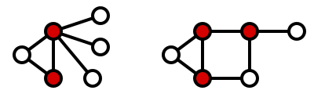

Graph Problems
Vertex Cover
- A vertex cover is a subset of the vertices such that each edge in the graph is incident to at least one vertex in the subset.

- The Minimum Vertex Cover problem seeks to find a cover with a minimum number of vertices in the subset.

-
Approximation Algorithm
C <- empty set While E is not empty {u,v} <- any edge from E add {u,v} to C remove from E all edges incident to u,v return C -
Solving Vertex Cover with Linear Programming and with Approximation Algorithm
Max Cut
-
Partition set of vertices into two sets such that the number of edges between the two sets (considered to be severed by the cut), is a large as possible.
-
In the example below vertices 2 and 3 are in one set and vertices 1, 4, and 5 are in the other, with a maximum cut value of 5.